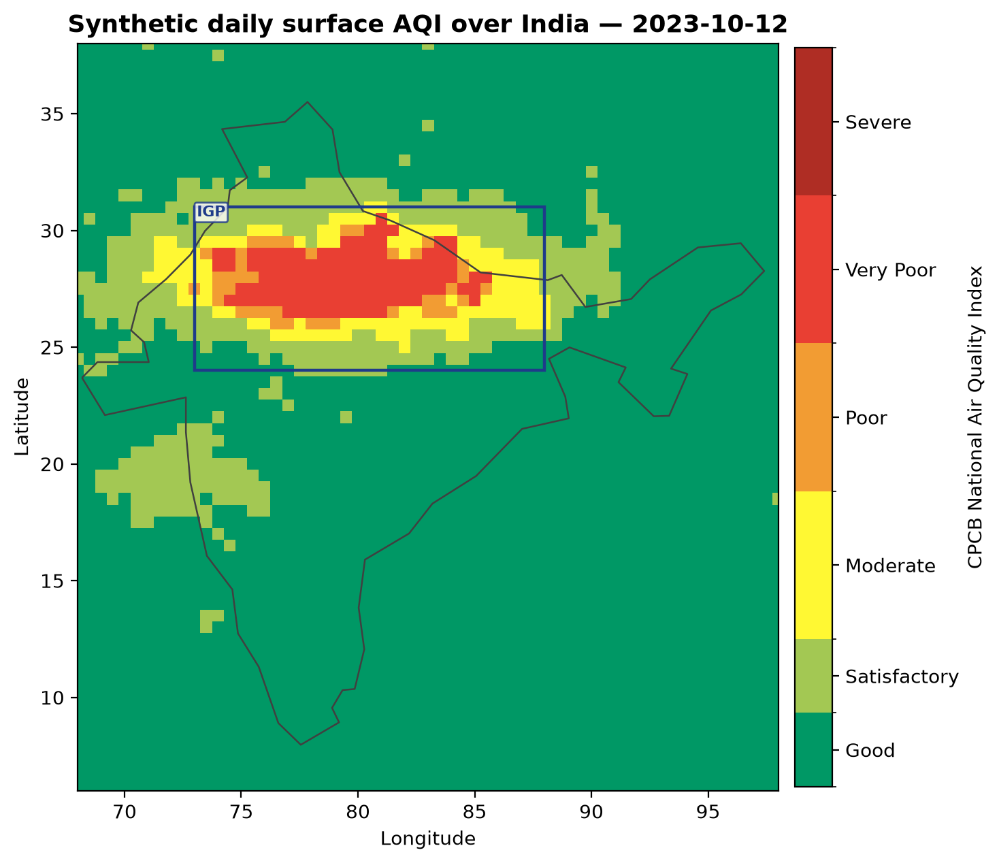
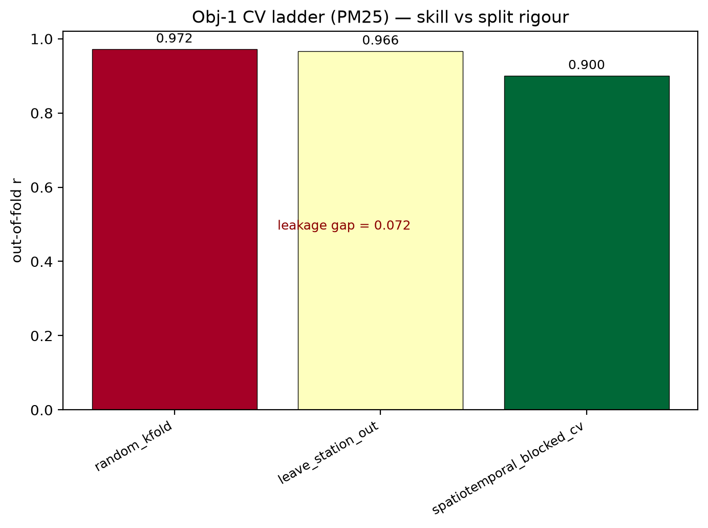
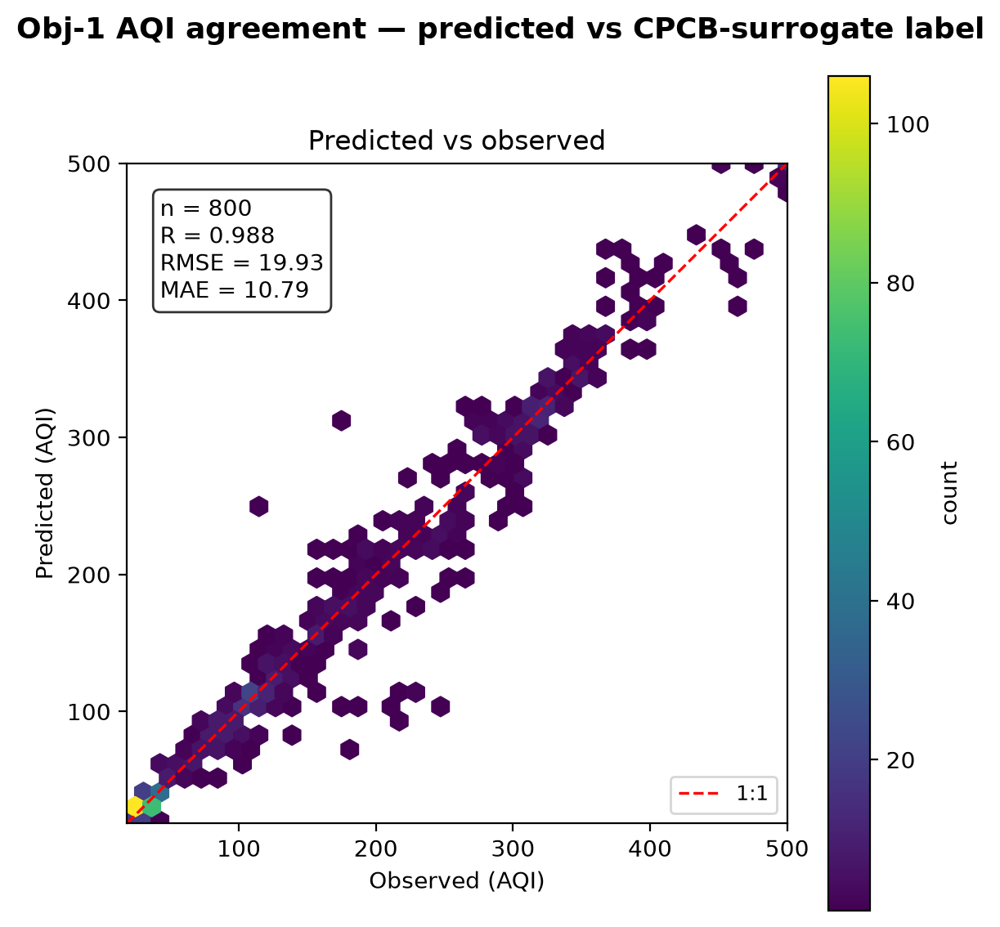
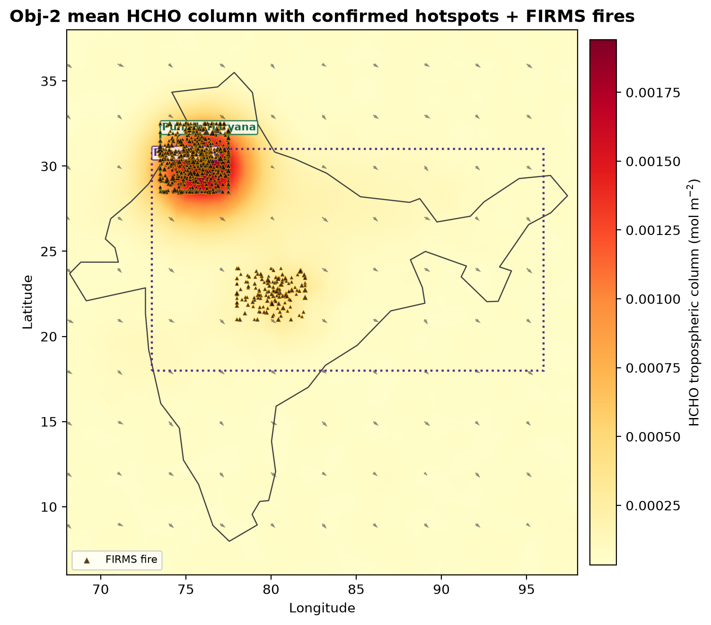
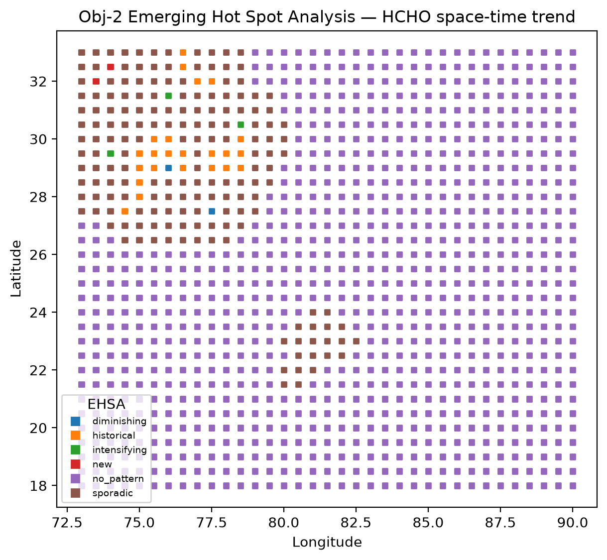
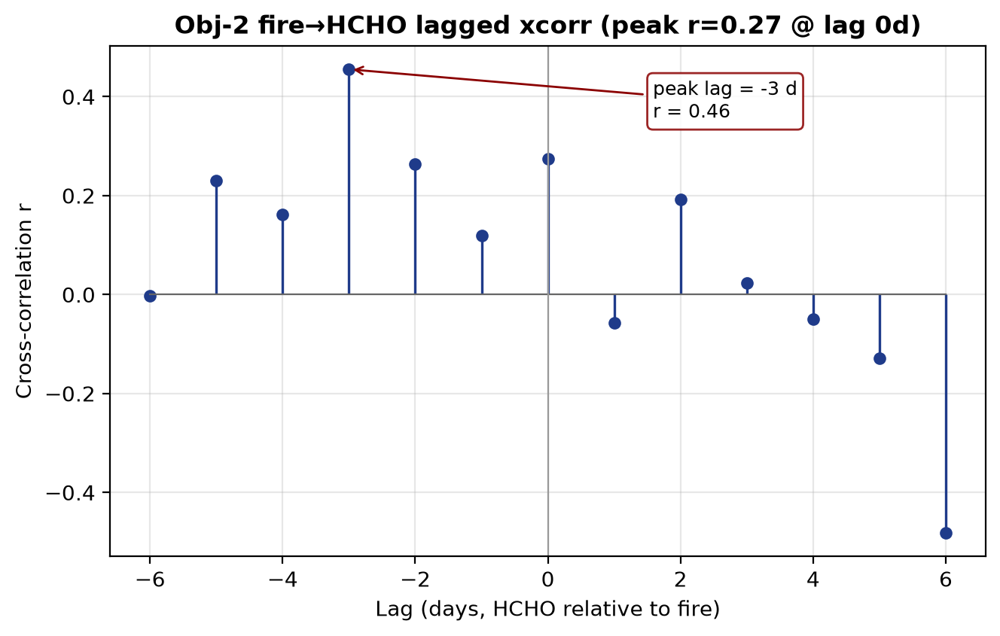
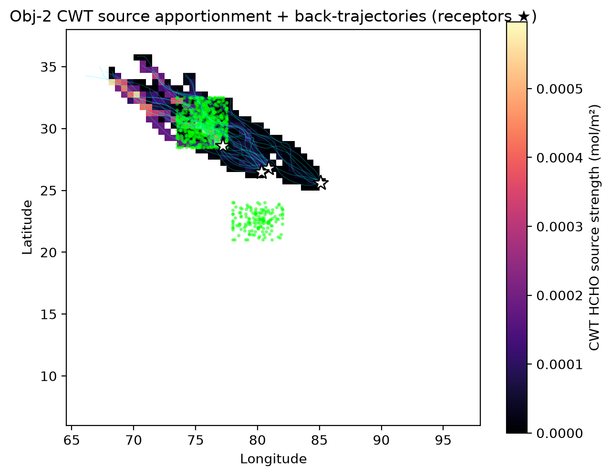

1 Live real ground-station data LIVE REAL
Sample of live readings actually pulled (raw API values)
| State | City | Station | Pollutant | Avg value | Last update (IST) |
|---|---|---|---|---|---|
| Bihar | Saharsa | Police Line, Saharsa - BSPCB | CO | 37 | 26-06-2026 20:00:00 |
| Bihar | Samastipur | DM Office_Kasipur, Samastipur - BSPCB | SO2 | 16 | 26-06-2026 20:00:00 |
| Chandigarh | Chandigarh | Sector-53, Chandigarh - CPCC | SO2 | 1 | 26-06-2026 20:00:00 |
| Chandigarh | Chandigarh | Sector 22, Chandigarh - CPCC | NH3 | 10 | 26-06-2026 20:00:00 |
| Chandigarh | Chandigarh | Sector 22, Chandigarh - CPCC | CO | 57 | 26-06-2026 20:00:00 |
| Chhattisgarh | Bhilai | Civic Center, Bhilai - Bhilai Steel Plant | PM10 | 21 | 26-06-2026 20:00:00 |
| Chhattisgarh | Bhilai | Civic Center, Bhilai - Bhilai Steel Plant | NO2 | 16 | 26-06-2026 20:00:00 |
| Chhattisgarh | Bhilai | Civic Center, Bhilai - Bhilai Steel Plant | NH3 | 1 | 26-06-2026 20:00:00 |
| Chhattisgarh | Bhilai | Civic Center, Bhilai - Bhilai Steel Plant | SO2 | 11 | 26-06-2026 20:00:00 |
| Delhi | Delhi | Nehru Nagar, Delhi - DPCC | NH3 | 7 | 26-06-2026 20:00:00 |
| Delhi | Delhi | Pusa, Delhi - DPCC | SO2 | 11 | 26-06-2026 20:00:00 |
| Delhi | Delhi | Patparganj, Delhi - DPCC | OZONE | 68 | 26-06-2026 20:00:00 |
| Gujarat | Ahmedabad | Chandkheda, Ahmedabad - IITM | OZONE | 22 | 26-06-2026 20:00:00 |
| Gujarat | Bhavnagar | Vidhyanagar, Bhavnagar - Nexteng Enviro | OZONE | 41 | 26-06-2026 20:00:00 |
These rows were fed through the package's real ingest adapter (aqi_india.ingest.cpcb._normalise_ogd_records → aggregate_hourly_to_daily → tag_stations, synthetic=False), which produced 20 tagged station-days (17 label / 3 validation) keyed to H3 res-7 and stratified into IGP / Central / Peninsula / Coastal regions. Note: the daily NAQI aggregator requires ≥75% hourly completeness, so a single hourly snapshot yields valid station geometry/tagging but NaN daily aggregates — expected behaviour for a one-shot snapshot, not a data error.
2 Real-source reachability & credential status
| Source | Reachable (proxy) | Real fetch verdict | Credential needed |
|---|---|---|---|
| CPCB via data.gov.in (ground stations) | 200 | REAL-OK — 3,535 live rows, 10 states sampled | data.gov.in API key (sample key used) |
| NASA FIRMS (VIIRS/MODIS fires) | 200 | BLOCKED — “Invalid MAP_KEY” | free FIRMS_MAP_KEY |
| OpenAQ v3 (ground stations) | 401 | BLOCKED — needs X-API-Key | OPENAQ_API_KEY |
| WAQI / AQICN (ground stations) | 200 | BLOCKED — demo token returns fixed Shanghai sample, not India | per-user WAQI token |
| Sentinel-5P HCHO (TROPOMI, via GEE) | reachable | BLOCKED — earthengine-api not installed & no EE auth | EE service-account JSON + registered project |
| MODIS MAIAC AOD (via GEE) | reachable | BLOCKED — same as S5P | EE service-account JSON + project |
| Copernicus CDS (ERA5) | 200 | BLOCKED — cdsapi not installed, no .cdsapirc | CDS API key |
3 Objective 1 — Daily surface AQI SYNTHETIC DEMO
Per-pollutant LightGBM (column→surface) trained against CPCB-surrogate labels on a synthetic India grid; scored with a cross-validation ladder (random k-fold → leave-station-out → spatiotemporal-blocked). Numbers below are deterministic demo output (seed 42) and measure plumbing, not skill.
CV ladder — out-of-fold Pearson r (leakage check)
| Pollutant | random k-fold | leave-station-out | spatiotemporal-blocked | Δr (STB−rand) |
|---|---|---|---|---|
| PM2.5 | 0.985 | 0.984 | 0.968 | −0.017 |
| PM10 | 0.982 | 0.982 | 0.965 | −0.017 |
| NO2 | 0.967 | 0.967 | 0.962 | −0.006 |
| SO2 | 0.931 | 0.930 | 0.922 | −0.009 |
| CO | 0.952 | 0.952 | 0.946 | −0.007 |
| O3 | 0.774 | 0.772 | 0.759 | −0.015 |



4 Objective 2 — HCHO hotspots & fire transport SYNTHETIC DEMO
HCHO hotspot consensus (Gi* + LISA + percentile, ≥2-of-3), Emerging Hot Spot Analysis, fire→HCHO lagged cross-correlation and Lagrangian transport attribution on the synthetic burning-season cube.



